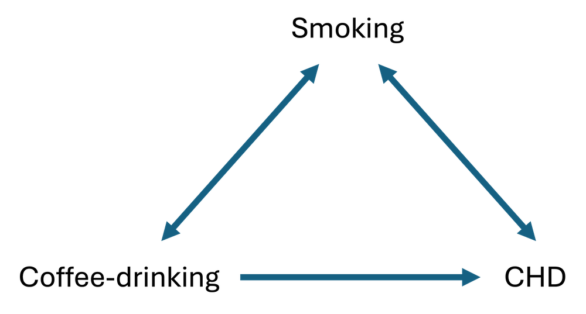

Confounding - how statistical adjustment relates to stratification.
Published
September 20, 2024
1 Background
I know I have touched on confounding before but it’s such an important concept in statistics that I thought I would dedicate a post to it today. There is so much one could talk about on the topic, but my aim is to provide you with some intuition as to what is actually happening when one variable ‘confuses’ the relationship between two others.
I’m going to use a fairly classic example from epidemiology that examines whether there is an association between drinking coffee (full-cream milk only thanks) and developing coronary heart disease (CHD).
Note
In a sense this is a causal question - i.e. “Does drinking coffee cause CHD?”, but for the sake of the illustration, let’s excuse ourselves from such a question’s fairly strict assumptions for the time being.
Being the good researchers that we are, we give considerable thought as to how to answer our question. That means we don’t forgo our own field-expertise and knowledge at the expense of the data-driven p-value gods. First and foremost, we think about the relationships we are investigating and all the potential factors that could influence those relationships. And that comes from theory, not statistical tests.
In examining those knowledge-driven theoretical relationships, we draw a Directed Acyclic Graph (DAG). This is a topic in its own right, but for another post - in the meantime some good primers can be found here and here. A DAG is otherwise more simply known as a causal diagram. It is meant to provide a visual representation of the causal relationships among a set of variables and in doing this forces the researcher to think about their scientific question in a more holistic manner. Indeed, statistical tests aren’t even involved at this point.
So, in thinking about our coffee-CHD question, it occurs to us that smoking is known to cause CHD and we wonder whether smoking might also be related to drinking coffee - i.e. do coffee-drinkers also smoke more (or less) than people who prefer don’t drink coffee (tea perhaps?). In this case, a simple DAG might look something like:

What this DAG helps to summarise is what we are now wondering - is smoking confusing or distorting the association between coffee drinking and the development of CHD? In other words, is smoking a confounder in the association between our exposure (coffee-drinking) and outcome (CHD) variables of interest?
Before we take a peek at our data, let’s refresh our memories regarding the three conditions a variable must fulfil to be considered a putative confounder:
The variable must be associated with both the exposure and the outcome.
The variable must be distributed unequally across the exposure (e.g. between treatment groups).
The variable must not lie on the causal pathway between the exposure and the outcome (this would be a mediator and requires different treatment).
2 Data
Ok, let’s now take a look at the hypothetical retrospective case-control data we’ll be using today. It consists of 40 observations and three variables:
outcome - did the individual have CHD (case) or not (control).
coffee-drinker - was the individual a coffee-drinker or not. This is our exposure variable of interest.
smoker - was the individual a smoker or not. This is our potential confounder.
Given the binary nature of all three variables we can explore the relationships nicely using a basic workhorse of epidemiological analysis - the 2x2 contingency table. In its simplest form this shows the frequency cross-tabulation of the exposure with the outcome. However, I think it’s also useful to display the conditional row percentages - in other words, the proportions (probabilities) of each outcome (categories as columns) given a particular exposure (categories as rows). In this way it is easy to eyeball whether the exposure is associated with the outcome without doing any specific test simply by looking at whether the row percentages vary greatly. As a good visual accompaniment for each cross-tabulation, I am also going to generate mosaic plots. These can give you an impression of potential associations without using any actual numbers.
3.1 Crude Odds Ratio - Exposure/Outcome
The following cross-tabulation and mosaic plot show the potential association between coffee-drinking and CHD. If we look at the proportions of people with CHD in each exposure group we can see that these do in fact differ - 67% of coffee drinkers develop CHD, compared to 40% of non-coffee drinkers. That is a telling sign of an association before we even do anything. The mosaic plot mirrors these numbers graphically.
Working out the odds ratio (OR) from a 2x2 contingency table is trivial. We want to divide the odds of having CHD given being a coffee-drinker by the odds of having CHD given being a non-coffee-drinker. That is:
\[\text{OR} = \frac{\text{10/5}}{10/15}\]
Or equivalently:
\[\text{OR} = \frac{\text{10 x 15}}{\text{5 x 10}} = 3\] The OR is 3 which indicates a 3-fold increase in the odds of CHD among coffee-drinkers compared to their non-coffee-drinking peers. We consider this a crude or unadjusted effect estimate.
To this point we haven’t even considered any potential confounding effect of smoking. So how could we incorporate that into the current analysis using 2x2 contingency tables? It’s actually very easy - we just stratify on smoking and generate two contingency tables - one for the association between coffee drinking and CHD in smokers and one for the association between coffee drinking and CHD in non-smokers. It then follows that within each stratum of smoking the effect of smoking is ‘held constant’ and therefore cannot confound the association between coffee drinking and CHD. In other words, this becomes an adjusted ‘effect’ of coffee drinking on CHD and is equivalent to ‘controlling’ for smoking in a multivariable statistical model (which I will demonstrate shortly).
3.2.1 Smokers
So, the cross-tabulation for the association between coffee-drinking and CHD in smokers, becomes:
Note how this time the (conditional row) proportions of people with CHD in each exposure group are more similar (in this contrived example they are the same) - in this subgroup of smokers it doesn’t matter whether you’re a coffee drinker or not - 75% of people have CHD.
Now, the OR is calculated as:
\[\text{OR} = \frac{\text{9 x 1}}{\text{3 x 3}} = 1\]
The OR is 1 - in other words there is no longer any association between coffee drinking and CHD. We consider this an adjusted OR as we have removed any potential confounding effect of smoking by holding it at a constant value (i.e. everyone is a smoker).
3.2.2 Non-smokers
Now let’s consider the non-smokers. The cross-tabulation for the association between coffee-drinking and CHD in non-smokers is:
Do you see a pattern here? Again, the conditional row percentages are the same across exposure groups (33%) - so, in this subgroup of non-smokers it also doesn’t matter whether you are a coffee drnker or not, the proportions of CHD are the same.
The OR this time is:
\[\text{OR} = \frac{\text{1 x 14}}{\text{7 x 2}} = 1\]
The adjusted OR is again 1 - that is, there is no association between coffee drinking and CHD when we remove any potential confounding effect of smoking by holding it at a (different) constant value (i.e. everyone is a non-smoker).
3.2.3 Salient points
There are two important points to make in the comparison of the crude and adjusted estimates:
The adjusted OR is not equal to the crude OR - this suggests confounding is present.
Furthermore, this represents a special case in which there is complete confounding - the OR reduces to the null value (i.e. 1). I will expand on these points in a moment.
3.3 Crude Odds Ratio - Confounder/Outcome
To further illuminate the above ideas let’s repeat the analyses but this time ‘switch’ the exposure and confounder around (hopefully it will become clear why we are doing this as you continue reading). The cross-tabulation and mosaic plot suggest an association between smoking and CHD - 75% of smokers develop CHD, compared to 33% of non-smokers.
\[\text{OR} = \frac{\text{3 x 14}}{\text{7 x 1}} = 6\]
The OR is again 6! Is this starting to make some sense?
3.4.3 Salient points
Again, there are two important points to make in the comparison of these crude and adjusted estimates:
It doesn’t seem to matter whether we adjust for coffee-drinking or not, the association between smoking and CHD remains the same.
It then follows that coffee-drinking is not a confounder in the smoking-CHD relationship.
3.5 Adjusted Odds Ratio - Overall
It just so happens that the adjusted OR’s from Section 3.2 are the same in each subgroup, but this is an exception rather than a rule. Normally, in the presence of confounding, effect estimates will differ in each subgroup to the crude estimate but will not be equal to each other. What do we do with separate effect estimates from each subgroup - this makes reporting somewhat painful, surely? Well, if the adjusted estimates aren’t too different from each other, they can be combined in a weighted manner to provide an overall summary estimate and this can be done using the Cochran-Mantel-Haenszel (CMH) test. I won’t illustrate this here as in the modern computing age there is really no need to be crunching this statistic anymore, and we use a statistical model instead.
As I alluded to above, we should only attempt to combine individual estimates when they are ‘similar’. But what does that mean? How similar should they be and how different can they be? There are no hard and fast rules but I will outline a couple of guidelines at the end of this post. The important thing is to realise that when individual estimates are different, this actually represents an effect modification/interaction effect - that is the strength of the association between the exposure and the outcome depends on the level of the third variable. Interaction effects are of interest (scientifically and clinically) and we shouldn’t try to cancel them out by averaging over them.
4 Statistical Modelling Approach
The cross-tabulation approach is great for expository purposes but is limiting in the types of relationships you can practically explore - things just become unwieldy with variables that contain more than two categories and impossible with continuous variables.
So, we tend to use statistical models instead. These make confounder control/adjustment easy - we just need to include the potential confounder in the model along with our exposure of interest. Let’s now replicate everything we have done thus far, but in a modelling-paradigm.
4.1 Crude Odds Ratio - Exposure/Outcome
Code
glm(outcome ~ coffee_drinker, data = df, family ="binomial") |>tbl_regression(exponentiate = T)
Characteristic
OR1
95% CI1
p-value
coffee_drinker
no
—
—
yes
3.00
0.81, 12.2
0.11
1 OR = Odds Ratio, CI = Confidence Interval
We get the same OR as in Section 3.1 in addition to a 95% C.I. and p-value.
The above models are all considered univariable in that one predictor only is specified in each model. In controlling or adjusting for a third variable we now produce a multivariable model where both the exposure and potential confounder are specified as predictors. This automatically produces an adjusted ‘effect’ of coffee drinking on CHD, controlling for smoking (and conversely an adjusted ‘effect’ of smoking on CHD, controlling for coffee drinking). We run these kinds of models all the time without thinking, but what the model is doing ‘under the hood’ is calculating a weighted average of the individual subgroup estimates in producing a single coefficient that becomes our effect/s of interest.
Code
glm(outcome ~ coffee_drinker + smoker, data = df, family ="binomial") |>tbl_regression(exponentiate = T)
Characteristic
OR1
95% CI1
p-value
coffee_drinker
no
—
—
yes
1.00
0.13, 5.84
>0.9
smoker
no
—
—
yes
6.00
1.08, 48.2
0.054
1 OR = Odds Ratio, CI = Confidence Interval
5 Some Guidelines…
To consolidate the ideas that we have explored today I want to lay out some very broad guidelines for how to interpret and compare crude and adjusted effects.
5.1 No Confounding or Effect Modification Present
If there is neither confounding nor effect modification, the crude estimate of association and the stratum-specific estimates will be similar (converging to being the same in the ideal context). This is reflected in Sections 3.3 and Section 3.4 above.
5.2 Only Confounding Present
If there is only confounding, the stratum-specific measures of association will be similar to one another, but they will be different from the overall crude estimate (by ~ 10% or more). In this situation, one can use CMH methods to calculate a weighted estimate and p-value, or even easier is to run a statistical model including the confounder as just another covariate. i.e. (in R)
mod1 <- lm(outcome ~ exposure + confounder, data = dat)
In this case the stratum-specific estimates will differ from one another significantly and these will also differ from the overall crude estimate. These effects should be reported as they are and not weighted and combined (i.e. averaged over) as this is of scientific and clinical interest in its own right. In practical terms in a statistical model, an interaction term should be specified. This changes the coding from:
mod1 <- lm(outcome ~ exposure + confounder, data = dat)
to
mod2 <- lm(outcome ~ exposure * confounder, data = dat)
As the two models are ‘nested’, an assessment of whether the interaction term is necessary or not can be performed using a likelihood ratio test:
anova(mod2, mod1)
If the p-value is significant you can conclude that the interaction term increases the explanatory power of the model and should be retained.
6 The End!
Another post that has gone on longer than I had anticipated - there is much more I could talk about on the topic but my goal is not to make you fall asleep on your keyboard. Hopefully this has helped to make the concept of confounding just that little bit clearer in your mind. Until next time…
Source Code
---title: "Epi. 101 Lesson - Confounding"date: 2024-09-20categories: [analysis, code, concept, modelling]#image: ""description: "Confounding - how statistical adjustment relates to stratification."format: html: html-table-processing: none---## BackgroundI know I have touched on confounding before but it's such an important concept in statistics that I thought I would dedicate a post to it today. There is so much one could talk about on the topic, but my aim is to provide you with some intuition as to what is actually happening when one variable 'confuses' the relationship between two others.I'm going to use a fairly classic example from epidemiology that examines whether there is an association between drinking coffee (full-cream milk only thanks) and developing coronary heart disease (CHD).::: callout-noteIn a sense this is a causal question - i.e. "Does drinking coffee *cause* CHD?", but for the sake of the illustration, let's excuse ourselves from such a question's fairly strict assumptions for the time being.:::Being the good researchers that we are, we give considerable thought as to *how* to answer our question. That means we don't forgo our own field-expertise and knowledge at the expense of the data-driven p-value gods. First and foremost, we think about the relationships we are investigating and *all* the potential factors that could influence those relationships. And that comes from theory, not statistical tests.In examining those knowledge-driven theoretical relationships, we draw a **Directed Acyclic Graph (DAG)**. This is a topic in its own right, but for another post - in the meantime some good primers can be found [here](https://onlinelibrary.wiley.com/doi/10.1111/resp.12238) and [here](https://health.ucdavis.edu/media-resources/ctsc/documents/pdfs/directed-acyclic-graphs20220209.pdf). A DAG is otherwise more simply known as a causal diagram. It is meant to provide a visual representation of the causal relationships among a set of variables and in doing this forces the researcher to think about their scientific question in a more holistic manner. Indeed, statistical tests aren't even involved at this point.So, in thinking about our coffee-CHD question, it occurs to us that smoking is known to cause CHD and we wonder whether smoking might also be related to drinking coffee - i.e. do coffee-drinkers also smoke more (or less) than people who prefer don't drink coffee (tea perhaps?). In this case, a simple DAG might look something like:{fig-align="center" width="80%"}What this DAG helps to summarise is what we are now wondering - is smoking confusing or distorting the association between coffee drinking and the development of CHD? In other words, is smoking a **confounder** in the association between our **exposure** (coffee-drinking) and **outcome** (CHD) variables of interest?Before we take a peek at our data, let's refresh our memories regarding the three conditions a variable must fulfil to be considered a putative confounder:1. The variable must be associated with **both** the exposure and the outcome.2. The variable must be distributed **unequally** across the exposure (e.g. between treatment groups).3. The variable must **not** lie on the causal pathway between the exposure and the outcome (this would be a mediator and requires different treatment).## DataOk, let's now take a look at the hypothetical retrospective case-control data we'll be using today. It consists of `40` observations and three variables:- `outcome` - did the individual have CHD (case) or not (control).- `coffee-drinker` - was the individual a coffee-drinker or not. This is our exposure variable of interest.- `smoker` - was the individual a smoker or not. This is our potential confounder.```{r}#| message: false#| warning: falselibrary(tidyverse)library(gtsummary)library(ggmosaic)library(kableExtra)library(janitor)# Hypothetical datay <-factor(c(rep(1, 20), rep(0, 20)), levels =c(0, 1), labels =c("control", "case"))x1 <-factor(c(rep(1, 10), rep(0, 10), rep(1, 5), rep(0, 15)), levels =c(0, 1), labels =c("no", "yes"))x2 <-factor(c(rep(1, 9), rep(0, 1), rep(1, 3), rep(0, 7), rep(1, 3), rep(0, 2), rep(1, 1), rep(0, 14)), levels =c(0, 1), labels =c("no", "yes"))df <-data.frame("outcome"= y, "coffee_drinker"= x1, "smoker"= x2)df |>kable(align ="c")```## Simple Epidemiological ApproachGiven the binary nature of all three variables we can explore the relationships nicely using a basic workhorse of epidemiological analysis - the **2x2 contingency table**. In its simplest form this shows the frequency cross-tabulation of the exposure with the outcome. However, I think it's also useful to display the **conditional row percentages** - in other words, the proportions (probabilities) of each outcome (categories as columns) **given** a particular exposure (categories as rows). In this way it is easy to eyeball whether the exposure is associated with the outcome without doing any specific test simply by looking at whether the row percentages vary greatly. As a good visual accompaniment for each cross-tabulation, I am also going to generate mosaic plots. These can give you an impression of potential associations without using any actual numbers.### Crude Odds Ratio - Exposure/Outcome {#sec-cor1}The following cross-tabulation and mosaic plot show the potential association between coffee-drinking and CHD. If we look at the proportions of people with CHD in each exposure group we can see that these do in fact differ - `67%` of coffee drinkers develop CHD, compared to `40%` of non-coffee drinkers. That is a telling sign of an association before we even do anything. The mosaic plot mirrors these numbers graphically.::: {.column width="45%"}```{r}tab <- df |>tabyl(coffee_drinker, outcome) |>adorn_totals(c("row", "col")) |>adorn_percentages("row") |>adorn_pct_formatting(rounding ="half up", digits =0) |>adorn_ns() |>adorn_title("combined")tab[1, 2] <-cell_spec(tab[1, 2], bold = T)tab[1, 3] <-cell_spec(tab[1, 3], bold = T)tab[2, 2] <-cell_spec(tab[2, 2], bold = T)tab[2, 3] <-cell_spec(tab[2, 3], bold = T)tab |>kable("html", escape = F) |>kable_paper(bootstrap_options ="hover", full_width = F)```:::::: {.column width="8%"}:::::: {.column width="45%"}```{r}#| message: false#| warning: falsedf2 <- dfdf2$coffee_drinker <-relevel(df2$coffee_drinker, ref ="yes")ggplot(data = df2) +geom_mosaic(aes(x =product(outcome, coffee_drinker), fill = coffee_drinker)) +guides(fill ="none") +coord_flip() +theme_bw(base_size =40)```:::Working out the odds ratio (OR) from a 2x2 contingency table is trivial. We want to divide the odds of having CHD given being a coffee-drinker by the odds of having CHD given being a non-coffee-drinker. That is:$$\text{OR} = \frac{\text{10/5}}{10/15}$$Or equivalently:$$\text{OR} = \frac{\text{10 x 15}}{\text{5 x 10}} = 3$$ The OR is `3` which indicates a `3-fold` increase in the odds of CHD among coffee-drinkers compared to their non-coffee-drinking peers. We consider this a **crude** or **unadjusted** effect estimate.### Adjusted Odds Ratios - Exposure/Outcome (via stratification) {#sec-aor}To this point we haven't even considered any potential confounding effect of smoking. So how could we incorporate that into the current analysis using 2x2 contingency tables? It's actually very easy - we just stratify on smoking and generate two contingency tables - one for the association between coffee drinking and CHD in smokers and one for the association between coffee drinking and CHD in non-smokers. It then follows that **within each stratum of smoking the effect of smoking is 'held constant' and therefore cannot confound the association between coffee drinking and CHD.** In other words, this becomes an **adjusted** 'effect' of coffee drinking on CHD and is equivalent to 'controlling' for smoking in a multivariable statistical model (which I will demonstrate shortly).#### Smokers {#sec-aor1}So, the cross-tabulation for the association between coffee-drinking and CHD **in smokers**, becomes:::: {.column width="45%"}```{r}tab <- df |>filter(smoker =="yes") |>tabyl(coffee_drinker, outcome) |>adorn_totals(c("row", "col")) |>adorn_percentages("row") |>adorn_pct_formatting(rounding ="half up", digits =0) |>adorn_ns() |>adorn_title("combined")tab[1, 2] <-cell_spec(tab[1, 2], bold = T)tab[1, 3] <-cell_spec(tab[1, 3], bold = T)tab[2, 2] <-cell_spec(tab[2, 2], bold = T)tab[2, 3] <-cell_spec(tab[2, 3], bold = T)tab |>kable("html", escape = F) |>kable_paper(bootstrap_options ="hover", full_width = F)```:::::: {.column width="8%"}:::::: {.column width="45%"}```{r}#| message: false#| warning: falsedf2 <- df |>filter(smoker =="yes")df2$coffee_drinker <-relevel(df2$coffee_drinker, ref ="yes")ggplot(data = df2) +geom_mosaic(aes(x =product(outcome, coffee_drinker), fill = coffee_drinker)) +guides(fill ="none") +coord_flip() +theme_bw(base_size =40)```:::Note how this time the (conditional row) proportions of people with CHD in each exposure group are more similar (in this contrived example they are the same) - in this subgroup of smokers it doesn't matter whether you're a coffee drinker or not - `75%` of people have CHD.Now, the OR is calculated as:$$\text{OR} = \frac{\text{9 x 1}}{\text{3 x 3}} = 1$$The OR is `1` - in other words there is no longer any association between coffee drinking and CHD. We consider this an **adjusted** OR as we have removed any potential confounding effect of smoking by holding it at a constant value (i.e. everyone is a smoker).#### Non-smokers {#sec-aor2}Now let's consider the non-smokers. The cross-tabulation for the association between coffee-drinking and CHD **in non-smokers** is:::: {.column width="45%"}```{r}tab <- df |>filter(smoker =="no") |>tabyl(coffee_drinker, outcome) |>adorn_totals(c("row", "col")) |>adorn_percentages("row") |>adorn_pct_formatting(rounding ="half up", digits =0) |>adorn_ns() |>adorn_title("combined")tab[1, 2] <-cell_spec(tab[1, 2], bold = T)tab[1, 3] <-cell_spec(tab[1, 3], bold = T)tab[2, 2] <-cell_spec(tab[2, 2], bold = T)tab[2, 3] <-cell_spec(tab[2, 3], bold = T)tab |>kable("html", escape = F) |>kable_paper(bootstrap_options ="hover", full_width = F)```:::::: {.column width="8%"}:::::: {.column width="45%"}```{r}#| message: false#| warning: falsedf2 <- df |>filter(smoker =="no")df2$coffee_drinker <-relevel(df2$coffee_drinker, ref ="yes")ggplot(data = df2) +geom_mosaic(aes(x =product(outcome, coffee_drinker), fill = coffee_drinker)) +guides(fill ="none") +coord_flip() +theme_bw(base_size =40)```:::Do you see a pattern here? Again, the conditional row percentages are the same across exposure groups (`33%`) - so, in this subgroup of non-smokers it also doesn't matter whether you are a coffee drnker or not, the proportions of CHD are the same.The OR this time is:$$\text{OR} = \frac{\text{1 x 14}}{\text{7 x 2}} = 1$$The **adjusted** OR is again `1` - that is, there is no association between coffee drinking and CHD when we remove any potential confounding effect of smoking by holding it at a (different) constant value (i.e. everyone is a non-smoker).#### Salient pointsThere are two important points to make in the comparison of the crude and adjusted estimates:1. The adjusted OR is not equal to the crude OR - this suggests confounding is present.2. Furthermore, this represents a special case in which there is *complete* confounding - the OR reduces to the null value (i.e. `1`). I will expand on these points in a moment.### Crude Odds Ratio - Confounder/Outcome {#sec-cor2}To further illuminate the above ideas let's repeat the analyses but this time 'switch' the exposure and confounder around (hopefully it will become clear why we are doing this as you continue reading). The cross-tabulation and mosaic plot suggest an association between smoking and CHD - `75%` of smokers develop CHD, compared to `33%` of non-smokers.::: {.column width="45%"}```{r}tab <- df |>tabyl(smoker, outcome) |>adorn_totals(c("row", "col")) |>adorn_percentages("row") |>adorn_pct_formatting(rounding ="half up", digits =0) |>adorn_ns() |>adorn_title("combined")tab[1, 2] <-cell_spec(tab[1, 2], bold = T)tab[1, 3] <-cell_spec(tab[1, 3], bold = T)tab[2, 2] <-cell_spec(tab[2, 2], bold = T)tab[2, 3] <-cell_spec(tab[2, 3], bold = T)tab |>kable("html", escape = F) |>kable_paper(bootstrap_options ="hover", full_width = F)```:::::: {.column width="8%"}:::::: {.column width="45%"}```{r}#| message: false#| warning: falsedf2 <- dfdf2$smoker <-relevel(df2$smoker, ref ="yes")ggplot(data = df2) +geom_mosaic(aes(x =product(outcome, smoker), fill = smoker)) +guides(fill ="none") +coord_flip() +theme_bw(base_size =40)```:::The OR for the association between smoking and CHD is:$$\text{OR} = \frac{\text{12 x 16}}{\text{8 x 4}} = 6$$So the crude OR is `6`, which indicates a `6-fold` increase in the odds of CHD in smokers compared to non-smokers (ignoring coffee-drinking status).### Adjusted Odds Ratios - Confounder/Outcome (via stratification) {#sec-aor5}Let us know compare the adjusted 'effects' in coffee-drinkers compared to non-coffee-drinkers.#### Coffee-drinkers {#sec-aor3}So, the cross-tabulation for the association between coffee-smoking and CHD **in coffee-drinkers**, becomes:::: {.column width="45%"}```{r}tab <- df |>filter(coffee_drinker =="yes") |>tabyl(smoker, outcome) |>adorn_totals(c("row", "col")) |>adorn_percentages("row") |>adorn_pct_formatting(rounding ="half up", digits =0) |>adorn_ns() |>adorn_title("combined")tab[1, 2] <-cell_spec(tab[1, 2], bold = T)tab[1, 3] <-cell_spec(tab[1, 3], bold = T)tab[2, 2] <-cell_spec(tab[2, 2], bold = T)tab[2, 3] <-cell_spec(tab[2, 3], bold = T)tab |>kable("html", escape = F) |>kable_paper(bootstrap_options ="hover", full_width = F)```:::::: {.column width="8%"}:::::: {.column width="45%"}```{r}#| message: false#| warning: falsedf2 <- df |>filter(coffee_drinker =="yes")df2$smoker <-relevel(df2$smoker, ref ="yes")ggplot(data = df2) +geom_mosaic(aes(x =product(outcome, smoker), fill = smoker)) +guides(fill ="none") +coord_flip() +theme_bw(base_size =40)```:::And the adjusted OR is:$$\text{OR} = \frac{\text{9 x 2}}{\text{1 x 3}} = 6$$The OR is `6` - in other words the same as the crude estimate.#### Non-coffee-drinkers {#sec-aor4}Now let's consider the non-coffee-drinkers. The cross-tabulation for the association between smokers and CHD **in non-coffee-drinkers** is:::: {.column width="45%"}```{r}tab <- df |>filter(coffee_drinker =="no") |>tabyl(smoker, outcome) |>adorn_totals(c("row", "col")) |>adorn_percentages("row") |>adorn_pct_formatting(rounding ="half up", digits =0) |>adorn_ns() |>adorn_title("combined")tab[1, 2] <-cell_spec(tab[1, 2], bold = T)tab[1, 3] <-cell_spec(tab[1, 3], bold = T)tab[2, 2] <-cell_spec(tab[2, 2], bold = T)tab[2, 3] <-cell_spec(tab[2, 3], bold = T)tab |>kable("html", escape = F) |>kable_paper(bootstrap_options ="hover", full_width = F)```:::::: {.column width="8%"}:::::: {.column width="45%"}```{r}#| message: false#| warning: falsedf2 <- df |>filter(coffee_drinker =="no")df2$smoker <-relevel(df2$smoker, ref ="yes")ggplot(data = df2) +geom_mosaic(aes(x =product(outcome, smoker), fill = smoker)) +guides(fill ="none") +coord_flip() +theme_bw(base_size =40)```:::And the adjusted OR is:$$\text{OR} = \frac{\text{3 x 14}}{\text{7 x 1}} = 6$$The OR is again `6`! Is this starting to make some sense?#### Salient pointsAgain, there are two important points to make in the comparison of these crude and adjusted estimates:1. It doesn't seem to matter whether we adjust for coffee-drinking or not, the association between smoking and CHD remains the same.2. It then follows that coffee-drinking is not a confounder in the smoking-CHD relationship.### Adjusted Odds Ratio - OverallIt just so happens that the adjusted OR's from [Section @sec-aor] are the same in each subgroup, but this is an exception rather than a rule. Normally, in the presence of confounding, effect estimates will differ in each subgroup to the crude estimate but will **not** be equal to each other. What do we do with separate effect estimates from each subgroup - this makes reporting somewhat painful, surely? Well, if the adjusted estimates aren't too different from each other, they can be combined in a weighted manner to provide an overall summary estimate and this can be done using the [Cochran-Mantel-Haenszel](https://en.wikipedia.org/wiki/Cochran–Mantel–Haenszel_statistics) (CMH) test. I won't illustrate this here as in the modern computing age there is really no need to be crunching this statistic anymore, and we use a statistical model instead.As I alluded to above, we should only attempt to combine individual estimates when they are 'similar'. But what does that mean? How similar *should* they be and how different *can* they be? There are no hard and fast rules but I will outline a couple of guidelines at the end of this post. The important thing is to realise that when individual estimates are different, this actually represents an **effect modification/interaction** effect - that is the strength of the association between the exposure and the outcome *depends* on the level of the third variable. Interaction effects are of interest (scientifically and clinically) and we shouldn't try to cancel them out by averaging over them.## Statistical Modelling ApproachThe cross-tabulation approach is great for expository purposes but is limiting in the types of relationships you can practically explore - things just become unwieldy with variables that contain more than two categories and impossible with continuous variables.So, we tend to use statistical models instead. These make confounder control/adjustment easy - we just need to include the potential confounder in the model along with our exposure of interest. Let's now replicate everything we have done thus far, but in a modelling-paradigm.### Crude Odds Ratio - Exposure/Outcome```{r}glm(outcome ~ coffee_drinker, data = df, family ="binomial") |>tbl_regression(exponentiate = T)```We get the same OR as in [Section @sec-cor1] in addition to a 95% C.I. and p-value.### Adjusted Odds Ratios - Exposure/Outcome (via stratification)We can replicate a stratified effect in our modelling by subsetting the data to select only those people in each smoking subgroup.#### Smokers```{r}glm(outcome ~ coffee_drinker, data =subset(df, smoker =="yes"), family ="binomial") |>tbl_regression(exponentiate = T)```OR = `1` (compare to [Section @sec-aor1])#### Non-smokers```{r}glm(outcome ~ coffee_drinker, data =subset(df, smoker =="no"), family ="binomial") |>tbl_regression(exponentiate = T)```OR = `1` (compare to [Section @sec-aor2])### Crude Odds Ratio - Confounder/Outcome```{r}glm(outcome ~ smoker, data = df, family ="binomial") |>tbl_regression(exponentiate = T)```OR = `6` (compare to [Section @sec-cor2])### Adjusted Odds Ratios - Confounder/Outcome (via stratification)#### Coffee-drinkers```{r}glm(outcome ~ smoker, data =subset(df, coffee_drinker =="yes"), family ="binomial") |>tbl_regression(exponentiate = T)```OR = `6` (compare to [Section @sec-aor3])#### Non-coffee-drinkers```{r}glm(outcome ~ smoker, data =subset(df, coffee_drinker =="no"), family ="binomial") |>tbl_regression(exponentiate = T)```OR = `6` (compare to [Section @sec-aor4])### Adjusted Odds Ratio - OverallThe above models are all considered univariable in that one predictor only is specified in each model. In controlling or adjusting for a third variable we now produce a multivariable model where both the exposure and potential confounder are specified as predictors. This automatically produces an adjusted 'effect' of coffee drinking on CHD, controlling for smoking (and conversely an adjusted 'effect' of smoking on CHD, controlling for coffee drinking). We run these kinds of models all the time without thinking, but what the model is doing 'under the hood' is calculating a weighted average of the individual subgroup estimates in producing a single coefficient that becomes our effect/s of interest.```{r}glm(outcome ~ coffee_drinker + smoker, data = df, family ="binomial") |>tbl_regression(exponentiate = T)```## Some Guidelines...To consolidate the ideas that we have explored today I want to lay out some very broad guidelines for how to interpret and compare crude and adjusted effects.### No Confounding or Effect Modification PresentIf there is neither confounding nor effect modification, the crude estimate of association and the stratum-specific estimates will be similar (converging to being the same in the ideal context). This is reflected in [Sections @sec-cor2] and [@sec-aor5] above.### Only Confounding PresentIf there is only confounding, the stratum-specific measures of association will be similar to one another, but they will be different from the overall crude estimate (by ~ 10% or more). In this situation, one can use CMH methods to calculate a weighted estimate and p-value, or even easier is to run a statistical model including the confounder as just another covariate. i.e. (in `R`)`mod1 <- lm(outcome ~ exposure + confounder, data = dat)`This is reflected in [Sections @sec-cor1] and [@sec-aor] above.### Confounding and/or Effect Modification PresentIn this case the stratum-specific estimates will differ from one another significantly and these will also differ from the overall crude estimate. These effects should be reported as they are and **not** weighted and combined (i.e. averaged over) as this is of scientific and clinical interest in its own right. In practical terms in a statistical model, an interaction term should be specified. This changes the coding from:`mod1 <- lm(outcome ~ exposure + confounder, data = dat)`to`mod2 <- lm(outcome ~ exposure * confounder, data = dat)`As the two models are 'nested', an assessment of whether the interaction term is necessary or not can be performed using a likelihood ratio test:`anova(mod2, mod1)`If the p-value is significant you can conclude that the interaction term increases the explanatory power of the model and should be retained.## The End!Another post that has gone on longer than I had anticipated - there is much more I could talk about on the topic but my goal is not to make you fall asleep on your keyboard. Hopefully this has helped to make the concept of confounding just that little bit clearer in your mind. Until next time...